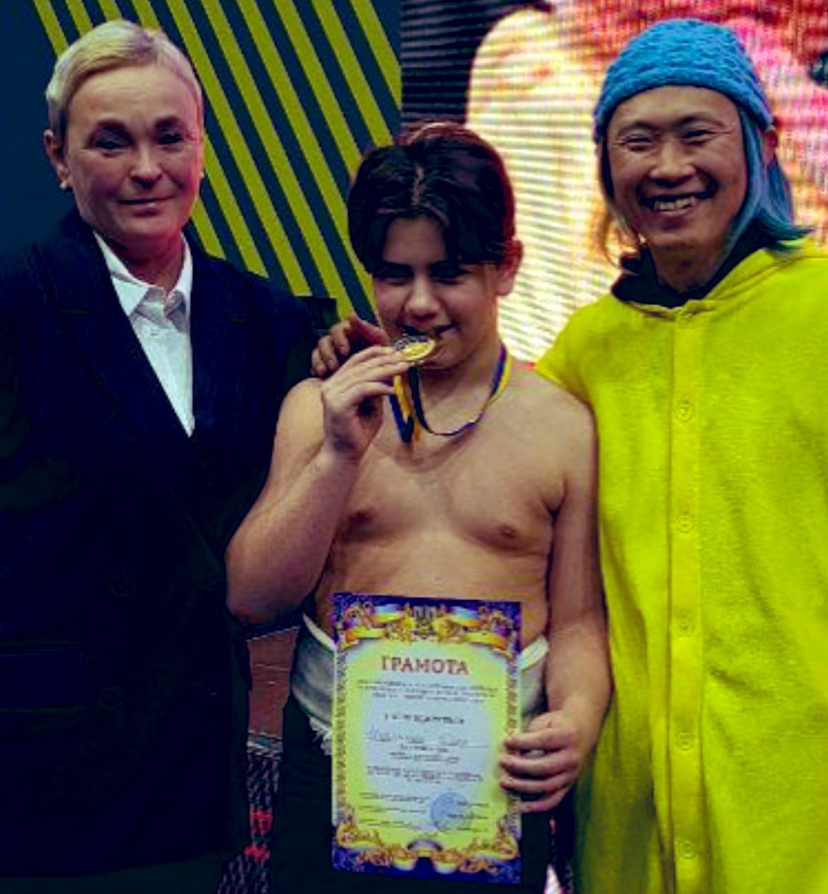
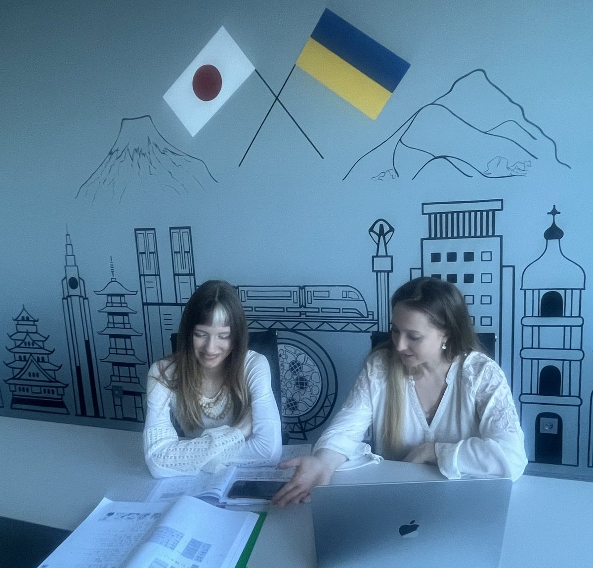
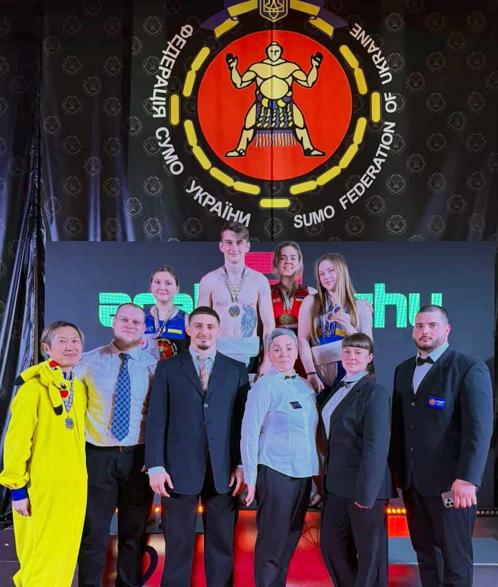

けん玉・おもちゃで日本文化を伝える
けん玉やキャラクターグッズなど日本の各種おもちゃを持ち込み、子供たちと一緒に遊ぶことで日本文化の普及を行っています。

ウジホロド市長と面会
ウクライナ西部ウジホロドの市長と面会し、日本との文化交流の依頼を受けました。ウジホロドには日本から送られた桜が多く、日本文化への関心が高い土地です。

わんぱく相撲ウクライナ大会 初開催
ウクライナ政府スポーツ省との共催で子供たちの相撲大会を初開催し、相撲文化の普及を進めています。

子ども力士を全国大会へ招待
わんぱく相撲ウクライナ大会の優勝者2名を東京・両国国技館の「わんぱく相撲全国大会」へ招待。兜山親方による指導も受けました。

東京未来フェス2023に出展
ウクライナ支援のためのブースを出展し、ウクライナ・ブチャのアーティストが制作した作品のチャリティーオークションを行いました。

第2回ウクライナわんぱく相撲大会
ドニプロのOlympic Reserve Stadiumで開催。土俵設営から表彰式まで運営し、ウクライナ公共放送Suspilne・ICTVなどで全国報道されました。8月には子ども力士3名が来日し全国大会に出場。

ウクライナ日本センターでの文化活動
ドニプロ国立大学内に開設した「ウクライナ日本センター」で、日本語教室や習字教室などのイベントを定期的に開催しています。ザポリージャなど近隣地域からも参加者が訪れ、日本からの寄せ書き国旗や贈り物も展示。キーウのウクライナ日本センターとも連携し、七夕などの季節行事も行っています。開設の経緯はこちら。

第4回相撲大会
ウクライナ相撲連盟と連携し、空襲警報による中断を乗り越えて全国の子供たち・学生たちの相撲大会を完遂しました。